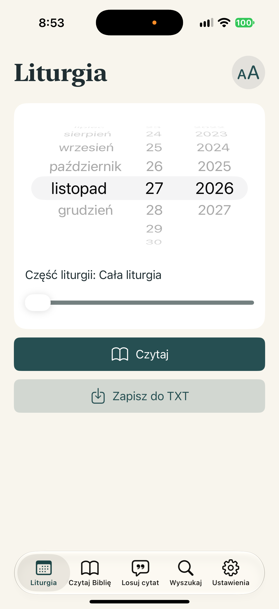

Biblia i liturgia na iPhone’a
dostępna biblia
Otwórz Ewangelię na dziś, wróć do ulubionego wersetu albo posłuchaj całego rozdziału. Czytaj tak, jak Ci wygodnie: wzrokiem, z VoiceOver lub głosem iPhone’a.
Poznaj funkcjeWersja na iPhone’a jest w przygotowaniu. Nie ma jej jeszcze w publicznym App Store.

Od czytania dnia do wybranego wersetu
- Liturgia
- Wybierz datę. Otwórz wszystkie czytania albo wskaż tylko jedną część, na przykład psalm czy Ewangelię. W VoiceOver miesiąc, dzień i rok zmieniasz osobno, przesunięciem w górę lub w dół.
- Czytaj Biblię
- Wybierz testament, księgę i rozdział. Gdy tekst ma numerowane wersety, przyciskiem „Przejdź do wersetu” trafisz prosto do szukanego miejsca.
- Losuj cytat
- Wylosuj fragment bez wskazywania tematu lub wybierz kategorię, na przykład „Na dobry dzień”. Możesz ponowić losowanie z tą samą kategorią.
- Wyszukaj
- Wpisz słowo lub zapamiętaną frazę i przejrzyj kolejne strony wyników. Wybrany tekst możesz zapisać jako plik TXT w systemowej aplikacji Pliki.
- Ustawienia
- Posłuchaj próbki głosu, dobierz tempo i głośność. Wielkość liter czytania możesz zmienić niezależnie od ustawień systemowych. Aplikacja pamięta Twój wybór i obsługuje jasny oraz ciemny wygląd.
Pomoc i kontakt
Jak zacząć słuchać?
Otwórz tekst i wybierz „Czytaj na głos”. Możesz go zatrzymać lub wstrzymać i wznowić. VoiceOver nie musi być włączony, żeby skorzystać z czytania.
Czy potrzebuję konta i internetu?
Konto nie jest potrzebne. Do pobrania czytań, losowania i wyszukiwania potrzebujesz internetu. Zapisany wcześniej plik TXT możesz czytać bez połączenia.
Coś nie działa?
Napisz, z której karty korzystasz i co się stało. Jeśli problem dotyczy VoiceOver, przyda się nazwa kontrolki, którą odczytał iPhone.
Autorzy i źródło tekstów
Pomysłodawca i autor wersji Windows: Grzegorz Przystupa. Projektant wersji iOS: Mieczysław Bąk. Oryginalna aplikacja Grzegorza na GitHubie.
Czytania i teksty biblijne pochodzą z TwojaBiblia.pl. Na 25 grudnia brakujące czytania Mszy o świcie i w dzień uzupełnia liturgia.wiara.pl. Aplikacja korzysta z Biblii Tysiąclecia, wydanie V. Informacje wydawcy o przekładzie.